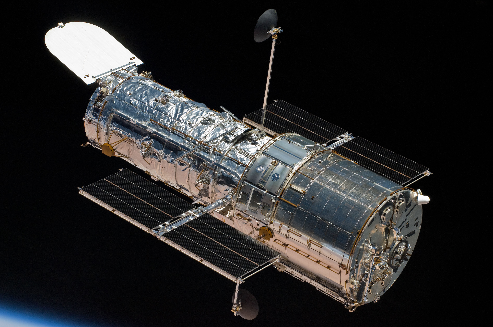
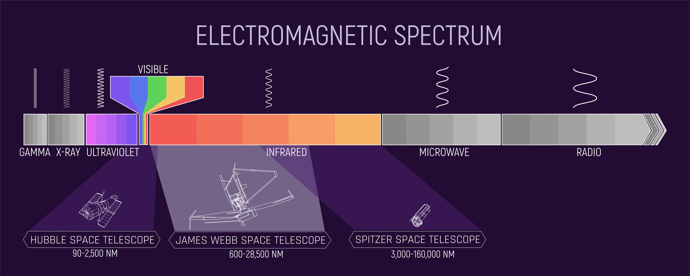
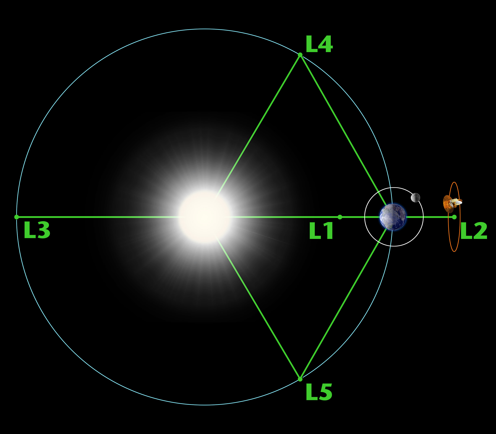
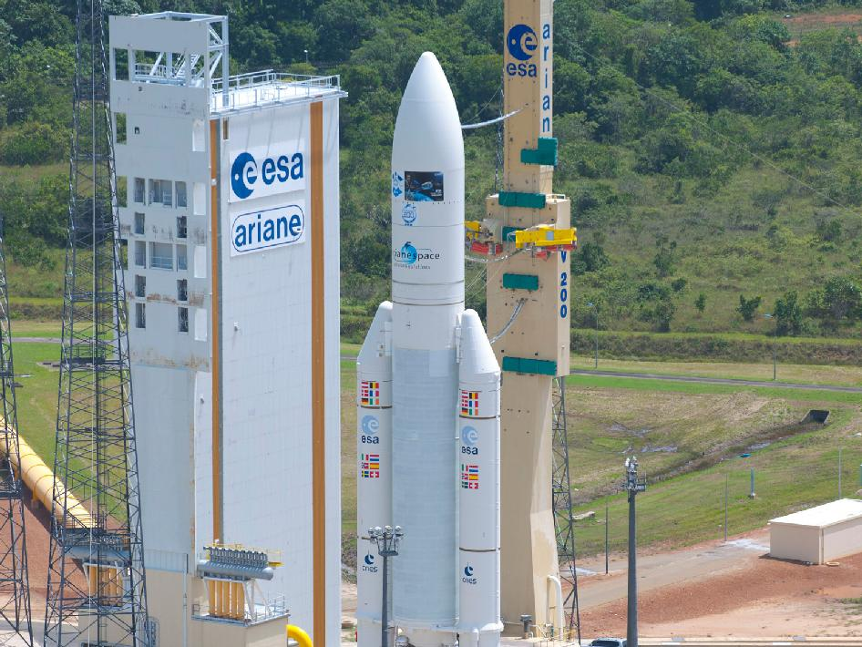

La Sphère de Dyson
Qu'est-ce que la sphère de Dyson?
La sphère de Dyson est un projet théorique de Méga-Ingénierie, proposée en 1960 par Freeman DYSON, physiciens théoricien et mathématicien britanno-américain. Inspiré par l’œuvre Star Maker de Olaf Stapledon, Freeman a théorisé la « Sphère de Dyson », une coque artificielle autour d’une étoile, dans le but de capter un maximum d’énergie du soleil. Freeman Dyson, en extrapolant (voir lexique) les besoins énergétiques de l’humanité, s’est vite rendu compte que nous allons avoir besoin de toute l’énergie libéré par le soleil chaque années.
Pour construire une telle cage, Dyson a calculé qu'en utilisant une masse de matière équivalente à celle de Jupiter, il est possible d'entourer notre Soleil d'une coque semi-solide, d'une épaisseur de 2 à 3 mètres, capable de piéger le rayonnement de notre étoile.
Avec un poids total de 6500 kg, JWST a été envoyé à environ 1.5 millions de km de la Terre au point Lagrange L2 du système Terre/Solei.
Ce lancement a été fait avec la célèbre fusée Ariane 5. Le télescope a été envoyé pour au moins cinq ans et demi dans l'espace.
Son rôle est d'observer les confins de l'univers encore plus loin que jamais auparavant, rechercher les premières étoiles et galaxies créées après le Big Bang. Il permettra aussi de mieux comprendre la formation et l'évolution au fil du temps des étoiles, des planètes et des galaxies. Enfin il va permettre d'explorer les mondes lointains et étudier l'atmosphère des exoplanètes.
Hubble est un télescope spatial qui a été conçu par la NASA et l'ESA le 24 avril 1990. C'est un télescope qui a pris la majorité des photos du ciel profond. Il a permis de mesurer le taux d'expansion de l'Univers, et de la grandeur de celui ci.
L'infrarouge est un certain type de lumière non visible à l'oeil nu. Pour le JWST elle est détectable grâce à des imageurs proches infrarouge (NIRCam, NIRISS), un spectromètre grand angle (NIRSpec) et un spectrographe imageur moyen infrarouge (MIRI).
Le point Lagrange L2 est un point d'équilibre gravitationnel entre deux astres en l'occurrence la terre et le soleil.
Ariane 5 est un lanceur spacial de l'ESA qui a été développé pour placer des satellites en orbite. Elle a une hauteur de 55 mètres pour une masse de 780 tonnes et son premier vole date de 1996.

Simon LRM
A reseigner.